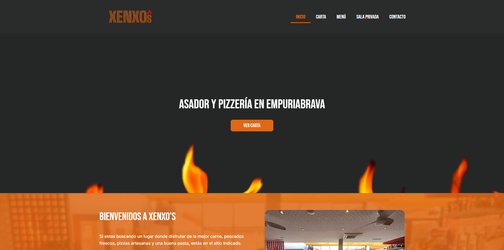
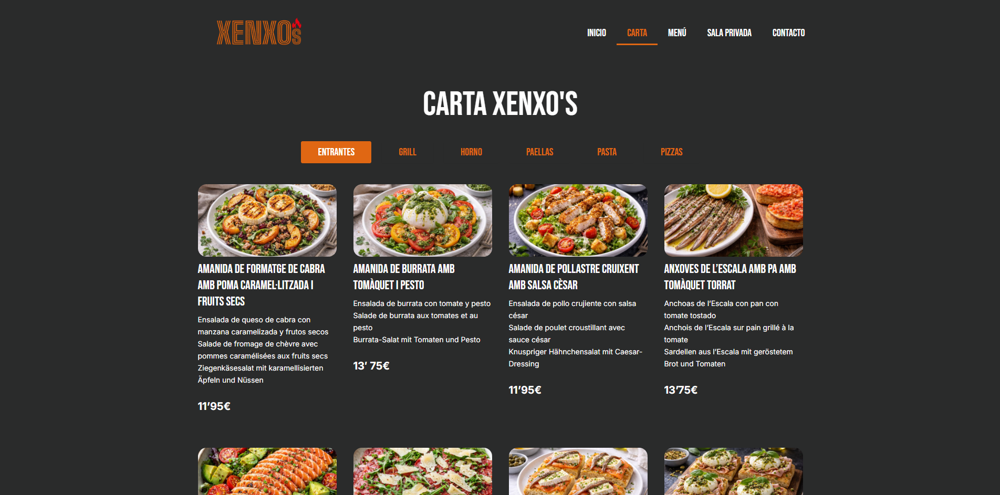

IDENTIDAD DEL SITIO WEB
La identidad del sitio web se construyó respetando la esencia del restaurante. En sus locales, Xenxo's transmite cercanía, producto de calidad y una experiencia donde disfrutar de las mejores carnes de Empuriabrava. El objetivo era trasladar exactamente esa sensación a la pantalla.


ESTRUCTURA DE LA INFORMACIÓN
La estructura de la web se ha diseñado con un enfoque claro y sencillo, teniendo en cuenta que una gran parte de los clientes del restaurante son personas adultas y de edad avanzada.
Por este motivo, se ha priorizado una experiencia de usuario intuitiva, accesible y fácil de navegar, permitiendo que cualquier visitante encuentre la información que necesita de forma rápida y sin complicaciones
Siguiendo este criterio, la carta del restaurante dispone de una página exclusiva, evitando que se mezcle con el resto de contenidos del sitio web. De esta manera, los usuarios pueden acceder directamente a la carta y consultarla de forma cómoda, mejorando la usabilidad y facilitando la navegación.
RESPONSIVE DESIGN
Al tratarse de una web de restaurante, se ha tenido en cuenta que la mayoría de usuarios accederán desde dispositivos móviles. Por este motivo, el diseño ha sido completamente adaptado a todo tipo de pantallas, garantizando una experiencia de usuario óptima, intuitiva y accesible en cualquier dispositivo.
En las categorías de la carta se ha aplicado un sombreado en el borde derecho, con el objetivo de aportar sensación de profundidad y señalar visualmente que existe contenido adicional al deslizar, mejorando así la interacción y la usabilidad.